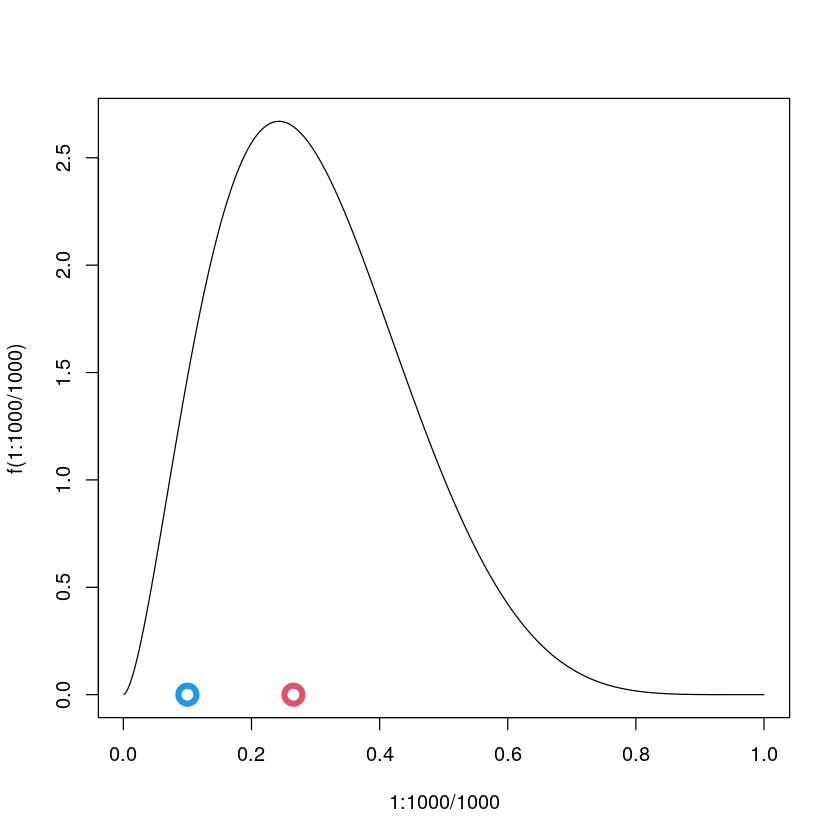
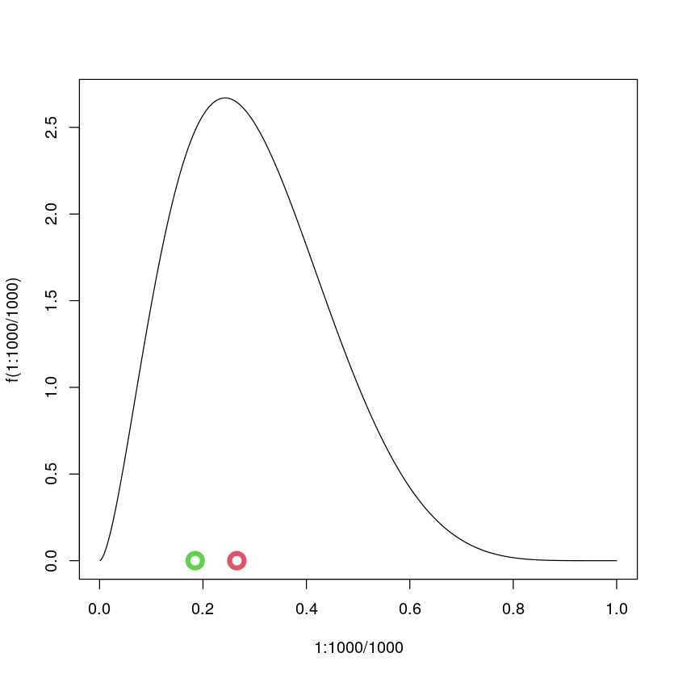
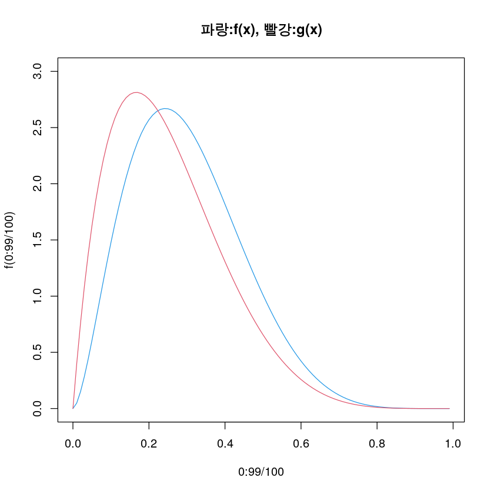
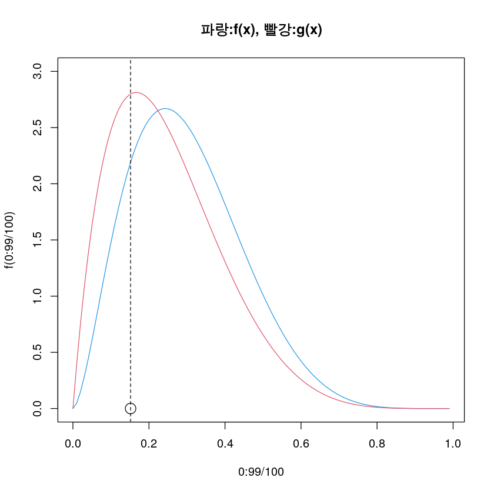

메트로폴리스-헤이스팅스
예제1
다시 \(B(2.7,6.3)\)를 추출하는 예제로 돌아오자.
시도1
- 우선 우리가 관심이 있는 타겟분포를 그려보자.
- 현재 \(X\)의 값은 모두 0.1이다. 그런데 궁극적으로는 \(X\)의 값을 모두 \(Beta(2.7,6.3)\)에서 생성된 샘플들로 채우고 싶다.
plot(1:1000/1000,f(1:1000/1000),type='l')
points(Y,0,col=2,cex=2,lwd=5)
points(X[1],0,col=4,cex=2,lwd=5)
– 빨간점이 \(Y\)이고 파란점은 \(X\)이다. 두개의 점중에서 어떤것이 \(f(x)\)에서 생성되었다고 믿어지는 점일까?
- 빨간색 점이 더 가능성이 높아보인다. (pdf값이 더 높음)
- \(X[2]\)의 값은 그냥 빨강으로 결정하자.
- 다시 \(Y\)를 하나 뽑자.
- 다시 뽑은 \(Y\)는 초록색으로 표현하자.
plot(1:1000/1000,f(1:1000/1000),type='l')
points(Y,0,col=3,cex=2,lwd=5)
points(X[2],0,col=2,cex=2,lwd=5)
– 둘중에 어떤것이 더 \(Beta(2.7,6.3)\)에서 추출한 샘플 같은가?
- 여전히 빨강이 더 \(Beta(2.7,6.3)\)의 분포에서 나온것 같다.
- 그러면 \(X[3]\)의 값도 그냥 빨강으로 한다.
- 지금까지의 결과를 요약하면 아래와 같다.
| \(t\) | \(X_t\) | \(Y_t\) | 설명 |
|---|---|---|---|
| \(1\) | \(0.1\) | \(0.2655087\) | \(Y_1\)이 \(X_1\)보다 더 \(Beta(2.7,6.3)\)에서 나온 분포같았음 \(\to\) \(X_2\)는 \(Y_1\)로 선택 |
| \(2\) | \(0.2655087\) | \(0.1848823\) | 이번에는 \(X_2\)가 \(Y_2\)보다 더 \(Beta(2.7,6.3)\)에서 나온 분포같음 \(\to\) \(X_3\)는 \(X_2\)로 선택 |
| \(3\) | \(0.2655087\) | \(-\) | - |
| \(\dots\) | \(\dots\) | \(\dots\) | \(\dots\) |
– 이걸 무한대로 반복하면 \(X_t\)는 결국 \(Beta(2.7,6.3)\)에서 뽑혔을법한 샘플들로 점점 채워진다.
- 따라서 \(\{X_1,X_2,X_3,\dots,X_{5000}\}\)을 모아서 히스토그램을 그리면 적당히 \(Beta(2.7,6.3)\)에서 추출한 표본이라 주장할 수 있을것 같다.
- 앞부분은 내가 임의로 값을 주는것에 따라 다르니까 대충 앞에 100개정도는 버리고 \(\{X_{101},X_{102},\dots,X_{5000}\}\)를 모아서 히스토그램을 그리면 좀 더 좋은 그림이 나올것 같다.
시도2
- 시도1의 당연한 우려점은 특정시점 이후에는 \(X_t\)는 거의 하나의 값만 나올것 같다는 것이다.
- 즉 우연히 \(X_t\)가 pdf의 최고점에서 찍힌다면, 그 이후에는 거의 \(X_t\)는 하나의 값만 나올것
- 당장 위의 예제만 살펴봐도 \(X_4, X_5,X_6,\dots\) 뽑아보았자 당분간은 \(X_4=X_5=X_6=..=0.2655087\) 일것 같다.
- 히스토그램을 그려봤자 다 \(0.2655087\)에만 값이 몰려있을 것이다.
- 더 그럴듯한 샘플을 선택하는 아이디어는 좋은데, 그런식으로 진행하면 결국 반복할수록 pdf의 최고점을 향해 달려가는 꼴밖에 안된다.
- 다시 아래의 그림을 관찰해보자.
plot(1:1000/1000,f(1:1000/1000),type='l')
points(Y,0,col=3,cex=2,lwd=5)
points(X[2],0,col=2,cex=2,lwd=5)- 초록색점보다 빨간색 점이 더 pdf값이 높으므로 빨간색점이 더 \(Beta(2.7,6.3)\)에서 나왔음직한 샘플인것은 맞다.
- 그런데 \(100\%\) 확신할 수 있는가?
- 빨간색점 0.2655087 에서의 pdf값은 아래와 같다.
– 반면 초록색점 0.1848823 에서의 pdf값은 아래와 같다.
– 사실 초록색점도 가능성 있는 점이다. 만약에 어떤사람이 \(Beta(2.7,6.3)\)에서 하나의 확률변수를 생성하고 나머지는 \(U[0,1]\)에서 생성했다고 치자. 두 결과를 초록색과 빨간색으로 표시되었다고 할때 어떤색이 \(Beta(2.7,6.3)\)에서 생성되었냐고 묻는다면 당신은 빨간색을 고를 것이다.
- 하지만 빨간색에 전재산을 베팅할 수 있는가?
- 빨간색에 \(51.58\%\)의 재산만 베팅한다.
- 즉 빨간색이 \(Beta(2.7,6.3)\)에서 왔다고 믿을 확률이 \(51.58\%\)정도라는 의미이다.
- 제안하는 알고리즘
\(X_1\)에 아무값이나 넣는다.
균등분포에서 \(Y_1\)을 뽑는다.
\(\frac{f(Y_1)}{f(X_1)+f(Y_1)}\)의 확률로 \(X_2=Y_1\)을 선택하고 \(\frac{f(X_1)}{f(X_1)+f(Y_1)}\)의 확률로 \(X_2=X_1\)을 선택한다.
(2)-(3)를 반복한다.
- 실행
– 분명히 \(X_t\)와 \(X_{t-1}\)는 종속되어있다. 그런데 전체 분포를 그려보니까 \(Beta(2.7,6.3)\)의 히스토그램 같다.
- 이 알고리즘이 왜 성립하는가?
- 그러고 보니까 이 느낌을 어디서 받았다. (에르고딕, 정상성)
시도2의 이론적 근거
- 주장하고 싶은 것은 아래와 같다. - 타겟분포: \(X_t\)의 극한분포는 \(Beta(2.7,6.3)\)이다. - 에르고드성: \(X_{\infty}\)의 분포인 \(Beta(2.7,6.3)\)의 hist는 \(X_{100} \sim X_{\infty}\)의 샘플(타임샘플?)을 바탕으로 히스토그램을 그려도된다.
- \(X_t\)는 정상분포를 가지고 그 확률밀도함수가 \(f(x)\)임을 보이면 된다.
- 분포 \(f\)가 아래의 조건(detailed balance condition)을 만족시키는지를 체크하면 된다.
\[f(x_{t+1})P(x_t|x_{t+1})=f(x_t)P(x_{t+1}|x_t) \quad \cdots (\star\star)\]
– \(x_{t+1}=x_t\) 이라면 그냥 성립한다.
- \(x_{t+1}\neq x_t\) 일때 성립하는지 봐야한다. (\(x_{t+1}=y_t\))
– \(P(x_{t+1}|x_{t})=\frac{f(x_{t+1})}{f(x_t)+f(x_{t+1})}\)
– \(x_t\)와 \(x_{t+1}\)의 순서를 바꾸면 \(P(x_t|x_{t+1})=\frac{f(x_t)}{f(x_{t})+f(x_{t+1})}\)
– \(P(x_{t+1}|x_t)\)와 \(P(x_t|x_{t+1})\)를 detailed balance condition \((\star\star)\)에 대입하면 등호가 성립함을 쉽게 체크할 수 있다.
시도3
- 매트로폴리스의 제안을 살펴보자.
- 매트로폴리스는 누구나 생각할 수 있는 \(P(x_{t+1}|x_t)=\frac{f(x_t)}{f(x_t)+f(x_{t+1})}\) 대신에 좀 더 특별한 것을 생각했다.
- 매트로폴리스: 나는 \(P(x_{t+1}|x_t)= \min\left (1,\frac{f(x_{t+1})}{f(x_t)} \right)\)를 쓰겠다!
– 왜??
- 매트로폴리스의 제안을 곰곰히 살펴보니까 \(f(x_{t+1})>f(x_t)\) 이라면 100% 확률로 \(x_t \to x_{t+1}\)로의 전환이 일어난다. 새로운제안이 조금이라도 낫다고 생각되면 무조건 이동하고, 새로운 제안이 약간 안좋아도 높은확률로 이동한다.
- 다시 아래의 그림을 고려하자.
plot(1:1000/1000,f(1:1000/1000),type='l')
points(0.1848823,0,col=3,cex=2,lwd=5)
points(0.2655087,0,col=2,cex=2,lwd=5)
- 초록색이 새로운 제안이다.
- 빨간색에 비하여 부족해 보인다.
– 그래도 이동한다.
- 무려 93%의 확률로 이동한다.
- 매트로폴리스의 알고리즘은 많은 경우 \(x_t\neq x_{t+1}\)이다. 즉 \(x_t\)와 \(x_{t+1}\)이 조금 덜 연관되어 보인다.
- 그런데 매트로폴리스의 제안이 과연 detailed balance condition을 만족할까?
\[P(x_{t+1}|x_t)f(x_t)=P(x_t|x_{t+1})f(x_{t+1})\]
- \(P(x_{t+1}|x_t)= \min\left (1,\frac{f(x_{t+1})}{f(x_t)} \right):=A\)
- \(P(x_{t}|x_{t+1})= \min\left (1,\frac{f(x_{t})}{f(x_{t+1})} \right):=B\)
– 그럼 detailed balance condition은 아래와 같다.
\[Af(x_t)=Bf(x_{t+1})\]
– 경우1: \(f(x_{t+1})>f(x_t)\) 라고 가정하자.
그러면 \(A=1\), \(B=\frac{f(x_t)}{f(x_{t+1})}\) 이 된다.
따라서 detailed balance condition이 성립한다.
- 경우2: \(f(x_{t+1})< f(x_t)\) 라고 가정하자.
그러면 \(A=\frac{f(x_{t+1})}{f(x_t)}, B=1\)이 된다.
따라서 detailed balance condition이 성립한다.
- 경우3: \(f(x_{t+1})=f(x_t)\) 이면 그냥 성립.
(초보단계의) 매트로폴리스-헤이스팅스 알고리즘
- 메트로폴리스의 알고리즘을 요약하면 아래와 같다.
\(X_1\)에 아무값이나 넣는다.
\(t=2,3,4,\dots\)에 대하여 아래를 반복한다.
\(Y_t\)를 균등분포에서 뽑고
\(\min\left(1, \frac{f(y_t)}{f(x_t)}\right)\)의 확률로 \(X_{t+1}=Y_t\)를 선택하고 그 외의 확률로 \(X_{t+1}=X_t\)를 선택한다.
시도4
- \(Y\)를 균등분포가 아닌 다른분포에서 뽑아도 가능할 것 같다.
- 예를들면 \(Y \sim Beta(2,6)\)에서 추출한다고 해보자.
plot(0:99/100,f(0:99/100),type='l',col=4,ylim=c(0,3),main="파랑:f(x), 빨강:g(x)")
lines(0:99/100,g(0:99/100),col=2)
plot(0:99/100,f(0:99/100),type='l',col=4,ylim=c(0,3),main="파랑:f(x), 빨강:g(x)")
lines(0:99/100,g(0:99/100),col=2)
points(Y,0,cex=2); abline(v=Y,lty=2)
참조분포가 균등분포였으면 \(Y\)를 타겟분포의 샘플이라고 믿을 수도 있었음.
그런데 참조분포가 붉은선의 pdf를 가지므로 \(Y\)가 타겟분포의 샘플이라 믿기 어려워 졌음.
수락확률이 수정되어야 한다.
기존의 수락확률: \(\min\left(1,\frac{f(Y_t)}{f(x_t)}\right)\)
수정된 수락확률: \(\min\left(1,\frac{f(Y_t)g(x_t)}{f(x_t)g(Y_t)}\right)\)
[수정된 알고리즘]
\(X_1\)에 아무값이나 넣는다.
\(t=2,3,4,\dots\)에 대하여 아래를 반복한다.
\(Y_t\)를 \(g\)에서 뽑고
\(\min\left(1, \frac{f(Y_t)g(x_t)}{f(x_t)g(Y_t)}\right)\)의 확률로 \(X_{t+1}=Y_t\)를 선택하고 그 외의 확률로 \(X_{t+1}=X_t\)를 선택한다.
깁스샘플링
- two-stage 깁스샘플러는 joint distribution에서 아래와 같은 과정을 거쳐 마코프체인을 만든다. 두 확률변수 \(X\),\(Y\)에 대한 결합확률밀도함수, 조건부확률밀도함수를 각각 \(f(x,y)\), \(f_{Y|X}\), \(f_{X|Y}\)와 같이 선언하자.
Take \(X_0=x_0\)
For \(t=1,2,3,\dots\) generate 1. \(Y_t \sim f_{Y|X}(\cdot | x_{t-1})\) 2. \(X_t \sim f_{X|Y}(\cdot | y_t)\)
- 깁스샘플링: conditional의 정보를 알고 있음 \(\Rightarrow\) marginal 과 joint를 샘플링
- 깁스샘플링으로 2변량 정규분포를 뽑는 방법
- 깁스샘플링을 이용하면 포스테리어를 샘플링 할 수 있다.
- \(\theta \sim {\cal B}eta(a,b)\)
- \(X|\theta \sim {\cal B}in(n,\theta)\)
조인트는 아래와 같다.
- \(f(x,\theta) = \begin{pmatrix} n \\ x \end{pmatrix}\frac{\Gamma(a+b)}{\Gamma(a)+\Gamma(b)}\theta^{x+a-1}(1-\theta)^{n-x+b-1}\)
이것을 이용하면 아래를 샘플링 할 수 있다.
- \(\theta |x \sim {\cal B}eta(x+a,n-x+b)\) <- 이 분포를 명시적으로 몰라도 가능함
- 토필모델
예제1
- 주사위 2개를 던져서 확률변수 \(X\)와 \(Y\)를 아래와 같이 정의하자.
- \(X\): 첫번째 주사위를 던졌을때 나오는 숫자. (\(X=1,2,3,4,5,6\))
- \(Y\): 두 주사위의 합 (\(Y=2,3,\dots,12\))
– \(X,Y\)의 확률질량 함수를 구하면 아래와 같다.
| \(x\) | 1 | 2 | 3 | 4 | 5 | 6 |
|---|---|---|---|---|---|---|
| \(p(x)\) | 1/6 | 1/6 | 1/6 | 1/6 | 1/6 | 1/6 |
| \(y\) | 2 | 3 | 4 | 5 | 6 | 7 | 8 | 9 | 10 | 11 | 12 |
|---|---|---|---|---|---|---|---|---|---|---|---|
| \(p(x)\) | 1/36 | 2/36 | 3/36 | 4/36 | 5/36 | 6/36 | 5/36 | 4/36 | 3/36 | 2/36 | 1/36 |
– 확률변수 \(X\)와 \(Y\)를 만드는법
– \(Y=y\)를 알고 있을떄 \(X\)를 쉽게 얻을 수 있을까?
- \(P(X|Y=y)=?\)
| y | x |
|---|---|
| 2 | 1 |
| 3 | 1,2 |
| 4 | 1,2,3 |
| 5 | 1,2,3,4 |
| 6 | 1,2,3,4,5 |
| 7 | 1,2,3,4,5,6 |
| 8 | 2,3,4,5,6 |
| 9 | 3,4,5,6 |
| 10 | 4,5,6 |
| 11 | 5,6 |
| 12 | 6 |
– 수식으로 요약하면
- \(y\leq 7\): \(x\)는 \(1\sim (y-1)\)사이의 숫자를 랜덤으로 뽑는다.
- \(y>7\): \(x\)는 \((y-6)\sim 6\)사이의 숫자를 랜덤으로 뽑는다.
- 그렇다면 아래와 같이 샘플링 할 수도 있지 않을까?
(\(random \sim\) 주사위)
\(x_1\)을 뽑는다. \(x_1=random\)
\(y_1\)은 \(x_1\)을 이용하여 추출한다. 즉 \(y_1=x_1+random\)
\(x_2\)는 \(y_1\)을 이용하여 추출한다 즉 \(x_2 \sim f(x_2|y_1)\)
\(y_2\)는 다시 \(x_2\)를 이용하여 추출한다. 즉 \(y_2=x_2+random\)
…
깁스샘플링이 가능한 이유
- \(X\) 만 따져보자.
detailed balance condition은 아래와 같다.
\[transition(x_t \to x_{t+1})f(x_t)=trainsition(x_{t+1} \to x_t)f(x_{t+1})\]
임을 보이면 된다.
- 우리의 예제의 경우는 아래를 보이면 된다.
- \(transition(1\to 1 )\pi(1)= transition (1\to 1 )\pi(1)\)
- \(transition(1\to 2 )\pi(1)= transition (2\to 1 )\pi(2)\)
- …
- \(transition(1\to 6 )\pi(1)= transition (6\to 1 )\pi(6)\)
- …
- \(transition(6\to 6 )\pi(6)= transition (6\to 6 )\pi(6)\)
노가다를 활용하면 성립함을 알 수 있다.
- \(\{Y_t\}\)역시 노다가를 활용하여 staionary process임을 확인 할 수 있다.
- conditional을 이미 알고 있다고 가정하였고, marginal을 시뮬레이션 할 수 있으므로 joint를 시뮬레이션으로 뽑을 수 있다.
깁스샘플링 (알고리즘 )
2차원
- \(X_0=x_0\)를 선택
- \(t=1,2,\dots\) 에 대하여 아래를 반복하면서 샘플링한다. - \(Y_t \sim f_{Y|X}(\cdot|x_{t-1})\) - \(X_t \sim f_{X|Y}(\cdot|y_t)\)
다차원
- \({\bf x}^{(t)}=(x_1^{(t)},\dots, x_p^{(t)})\)가 주어졌을때 아래를 반복 - \(X_1^{(t+1)} \sim f_1(x_1| x_{2}^{(t)},\dots,x_p^{(t)})\) - \(X_2^{(t+1)} \sim f_2(x_2| x_{1}^{(t+1)}, x_{3}^{(t)}, \dots, x_p^{(t)})\) - \(\dots\) - \(X_p^{(t+1)} \sim f_p(x_p| x_{1}^{(t+1)},\dots x_{p-1}^{(t+1)})\)
느낌: 나 빼고 다른 \(p-1\)의 값이 다 뽑혔으면 그걸 바탕으로 나도 1차원 랜덤변수를 만들 수 있음.
- 첫 시작은 누가?
토픽모델
예제
| word1 | word2 | |
|---|---|---|
| doc1 | 손흥민 | 골 |
| doc2 | 골 | 확률 |
| doc3 | 확률 | 데이터과학 |
문서당 토픽비율 - 문서1:[손흥민,골]=[2,1] - 문서2:[골,확률]=[1,2] - 문서3:[확률,데이터과학]=[2,1]
토픽별로 자주등장하는 단어 - 토픽1: 골,골,데이터과학 –> 축구? - 토픽2: 손흥민,확률,확률 –> 통계?
목표: document_topics의 값을 그럴듯한 값으로 채우고 싶다. 예를들면 아래처럼
그러니까 \(3\times 2\) 차원의 랜덤변수를 뽑는 문제이다.
문서1: [손흥민, 골]
- 임의의 초기값을 넣어서 현재상황은 아래와 같다.
문서당 토픽비율 - 문서1:[손흥민,골]=[2,1] - 문서2:[골,확률]=[1,2] - 문서3:[확률,데이터과학]=[2,1]
토픽별로 자주등장하는 단어 - 토픽1: 골,골,데이터과학 –> 축구? - 토픽2: 손흥민,확률,확률 –> 통계?
- 지금 우리의 관심은 문서1 손흥민 해당하는 토픽으로 토픽=1이라 생각하는 것이 그럴듯한지, 토픽=2라고 생각하는게 그럴듯한지 다시 따져보고 싶다.
- 깁스샘플링: 현재 관심이 있는 문서1의 첫단어 손흥민에 대한 토픽분류를 제외하고 나머지는 모두 올바른 값이라고 가정하자.
문서당 토픽비율 - 문서1:[손흥민,골]=[2,1] ==> [?,1] - 문서2:[골,확률]=[1,2] ==> [1,2] - 문서3:[확률,데이터과학]=[2,1] ==> [2,1]
토픽별로 자주등장하는 단어 - 토픽1: 골,골,데이터과학 ==> 골,골,데이터과학 - 토픽2: 손흥민,확률,확률 ==> ?, 확률, 확률
- 손흥민이라는 단어가 뽑힐 경우는 아래의 두 경우중 하나이다. - 토픽1에서 뽑혔을 경우 - 토픽2에서 뽑혔을 경우
- 토픽1에서 뽑혔을 경우는 아래와 같이 계산 할 수 있다. - (문서1에 토픽1이 포함되어 있는 비율) \(\times\) (토픽1에서 손흥민이라는 단어를 뽑을 확률) = 1 \(\times\) 0.001 - p(토픽1|문서1) \(\times\) p(손흥민|토픽1) = 1 \(\times\) 0.001
- 토픽2에서 뽑혔을 경우는 아래와 같이 계산 할 수 있다. - (문서1에 토픽2이 포함되어 있는 비율) \(\times\) (토픽2에서 손흥민이라는 단어를 뽑을 확률) = 0.001 \(\times\) 0.001 - p(토픽2|문서1) \(\times\) p(손흥민|토픽2) = 0.001 \(\times\) 0.001
- 손흥민은 토픽1에서 뽑혔다고 보는게 타당함. (왜? 현재단어 손흥민 문서1에 있고, 문서1은 토픽1이 대부분이니까!)
- 아래와 같이 업데이트 한다.
문서당 토픽비율 - 문서1:[손흥민,골]=[1,1] - 문서2:[골,확률]=[1,2] - 문서3:[확률,데이터과학]=[2,1]
토픽별로 자주등장하는 단어 - 토픽1: 손흥민,골,골,데이터과학 - 토픽2: 확률,확률
문서2: [손흥민, 골]
- 업데이트 전
문서당 토픽비율 - 문서1:[손흥민,골]=[1,1] ==> [1,?] - 문서2:[골,확률]=[1,2] ==> [1,2] - 문서3:[확률,데이터과학]=[2,1] ==> [2,1]
토픽별로 자주등장하는 단어 - 토픽1: 손흥민,?,골,데이터과학 - 토픽2: 확률,확률
- 샘플링
- p(토픽1|문서1) \(\times\) p(골|토픽1) = 1 \(\times\) 1/3
- p(토픽2|문서1) \(\times\) p(골|토픽2) = 0.001 \(\times\) 0.001
결정: 토픽1을 선택 (왜? 현재단어는 문서1에 있는데, 문서1에는 토픽1이 대부분이다, 그리고 현재 단어는 골인데, 골이라는 단어는 토픽1에서 잘나온다.)
- 업데이트 후 (그대로 유지)
문서당 토픽비율 - 문서1:[손흥민,골]=[1,1]
- 문서2:[골,확률]=[1,2] - 문서3:[확률,데이터과학]=[2,1]
토픽별로 자주등장하는 단어 - 토픽1: 손흥민,골,골,데이터과학 - 토픽2: 확률,확률
- 이런식으로 반복하면 결국 각 단어는 자신의 정체성(토픽1인지 토픽2인지)를 아래와 같은 2가지 기준으로 판단한다. - 나(=단어)는 \(d\)-th document에 속해있다. \(\to\) 그런데 이 document의 단어를 쭉 살펴보니 토픽 \(k\)가 많다. \(\to\) 나도 토픽 \(k\)인가?
- 나(=단어)와 똑같은 이름을 가진 단어들이 토픽 \(k'\)에 많다. \(\to\) 나도 토픽 \(k'\)에서 왔을까?
- 재미있는 점은 각 단어의 선택이 다른 단어에도 영향을 준다는 것이다. (다들 나 빼고는 맞다고 가정하고 있으니까 )
- 구현해보자.
doclen <- 5
word<-c('손흥민','골','골','박지성','패스',
'골','확률','패스','손흥민','골',
'골','골','확률','패스','골',
'골','박지성','통계','확률','골',
'확률','통계','박지성','통계','골',
'확률','확률','골','통계','AI',
'확률','확률','통계','통계','AI',
'확률','빅데이터','데이터과학','빅데이터','AI',
'확률','데이터과학','AI','데이터과학','데이터과학')
doc<-c(rep(1,doclen),rep(2,doclen),rep(3,doclen),
rep(4,doclen),rep(5,doclen),rep(6,doclen),
rep(7,doclen),rep(8,doclen),rep(9,doclen))
topic<-c(2,1,1,2,2,
1,2,1,2,2,
1,2,1,2,2,
1,2,1,2,2,
1,2,1,2,2,
1,2,2,2,2,
1,2,1,1,2,
1,2,1,1,2,
2,1,1,2,2)
data<-tibble(word=word,doc=doc,topic=topic)
data| word | doc | topic |
|---|---|---|
| <chr> | <dbl> | <dbl> |
| 손흥민 | 1 | 2 |
| 골 | 1 | 1 |
| 골 | 1 | 1 |
| 박지성 | 1 | 2 |
| 패스 | 1 | 2 |
| 골 | 2 | 1 |
| 확률 | 2 | 2 |
| 패스 | 2 | 1 |
| 손흥민 | 2 | 2 |
| 골 | 2 | 2 |
| 골 | 3 | 1 |
| 골 | 3 | 2 |
| 확률 | 3 | 1 |
| 패스 | 3 | 2 |
| 골 | 3 | 2 |
| 골 | 4 | 1 |
| 박지성 | 4 | 2 |
| 통계 | 4 | 1 |
| 확률 | 4 | 2 |
| 골 | 4 | 2 |
| 확률 | 5 | 1 |
| 통계 | 5 | 2 |
| 박지성 | 5 | 1 |
| 통계 | 5 | 2 |
| 골 | 5 | 2 |
| 확률 | 6 | 1 |
| 확률 | 6 | 2 |
| 골 | 6 | 2 |
| 통계 | 6 | 2 |
| AI | 6 | 2 |
| 확률 | 7 | 1 |
| 확률 | 7 | 2 |
| 통계 | 7 | 1 |
| 통계 | 7 | 1 |
| AI | 7 | 2 |
| 확률 | 8 | 1 |
| 빅데이터 | 8 | 2 |
| 데이터과학 | 8 | 1 |
| 빅데이터 | 8 | 1 |
| AI | 8 | 2 |
| 확률 | 9 | 2 |
| 데이터과학 | 9 | 1 |
| AI | 9 | 1 |
| 데이터과학 | 9 | 2 |
| 데이터과학 | 9 | 2 |
D<-max(data$doc) # 다큐먼트의 수
K<-2 # 토픽의수
W<-length(unique(data$word))
for(t in 1:2){
for(d in 1:D){
for(w in 1:doclen){
i=(d-1)*doclen+w
data[i,]$topic<-(topicprob(data[-i,],d,w)[2] > runif(1)) + 1
}
}
}
data| word | doc | topic |
|---|---|---|
| <chr> | <dbl> | <dbl> |
| 손흥민 | 1 | 1 |
| 골 | 1 | 1 |
| 골 | 1 | 1 |
| 박지성 | 1 | 1 |
| 패스 | 1 | 1 |
| 골 | 2 | 2 |
| 확률 | 2 | 1 |
| 패스 | 2 | 1 |
| 손흥민 | 2 | 1 |
| 골 | 2 | 1 |
| 골 | 3 | 1 |
| 골 | 3 | 1 |
| 확률 | 3 | 1 |
| 패스 | 3 | 1 |
| 골 | 3 | 1 |
| 골 | 4 | 1 |
| 박지성 | 4 | 1 |
| 통계 | 4 | 1 |
| 확률 | 4 | 1 |
| 골 | 4 | 1 |
| 확률 | 5 | 2 |
| 통계 | 5 | 2 |
| 박지성 | 5 | 2 |
| 통계 | 5 | 2 |
| 골 | 5 | 2 |
| 확률 | 6 | 2 |
| 확률 | 6 | 2 |
| 골 | 6 | 2 |
| 통계 | 6 | 2 |
| AI | 6 | 2 |
| 확률 | 7 | 2 |
| 확률 | 7 | 2 |
| 통계 | 7 | 2 |
| 통계 | 7 | 2 |
| AI | 7 | 2 |
| 확률 | 8 | 2 |
| 빅데이터 | 8 | 2 |
| 데이터과학 | 8 | 2 |
| 빅데이터 | 8 | 2 |
| AI | 8 | 2 |
| 확률 | 9 | 2 |
| 데이터과학 | 9 | 2 |
| AI | 9 | 2 |
| 데이터과학 | 9 | 2 |
| 데이터과학 | 9 | 2 |